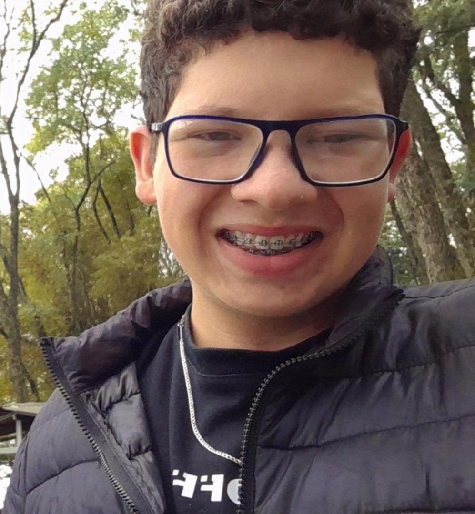

Olá! Muito prazer me chamo Dalton josé Neres, tenho atualmente 17 anos, sou estudante do 3°Ano do Ensino Médio e obviamente sou apaixonado por tecnologia!
Sou natural da cidade de Salto Do Lontra-PR, cidade a qual moro até nos dias atuais, uma pequena cidade do interior, localizada no Sudoeste do estado do Paraná;
Tenho atualmente como objetivo profissional, me tornar um desenvolvedor web, com nas áreas de front-end e banco de dados;
Após a minha conclusão no ensino médio, pretendo cursar Engenharia de Softaware, algo que me representa, por conta da elaboração e desenvolvimento de software
Essa paixão por TECNOLOGIA, acredito que já veio do sangue hehe, foi algo que sempre me interessei e tive vontade de estudar/aprender sobre está área.
Meu principal/objetivo foco como desenvolver será aplicar recursos acessiveis para qualuqer pessoa, que utilize dos recursos tecnologicos, como por exemplo IA;
Espero algum dia no futuro, pode ajudar a trasformar vidas com o apoio da tecnologia!
ESPERO ANSIOSAMENTE POR VOCÊ NOS PRÓXIMOS CAPÍTULOS!
